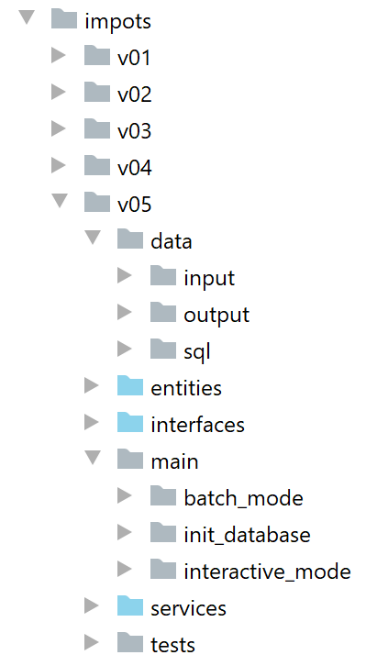
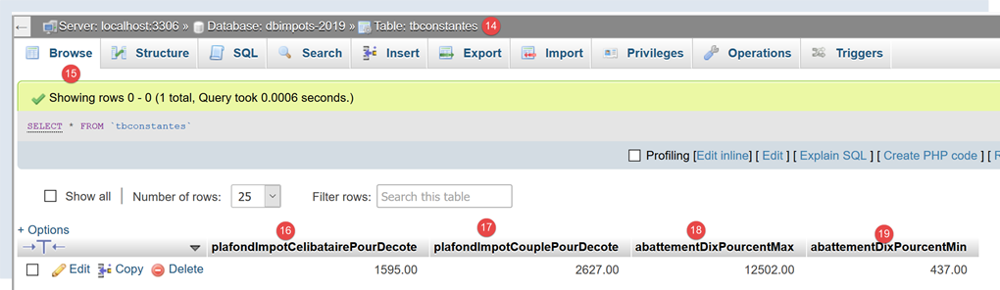
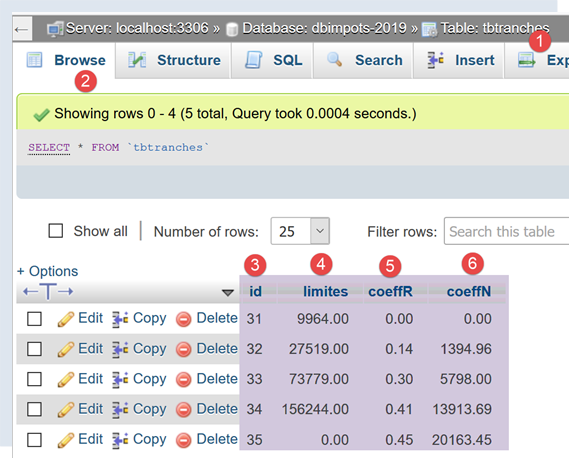
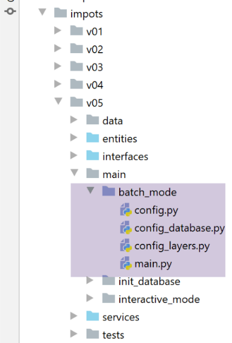
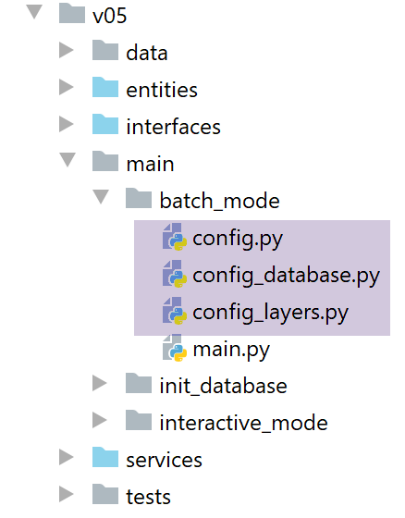
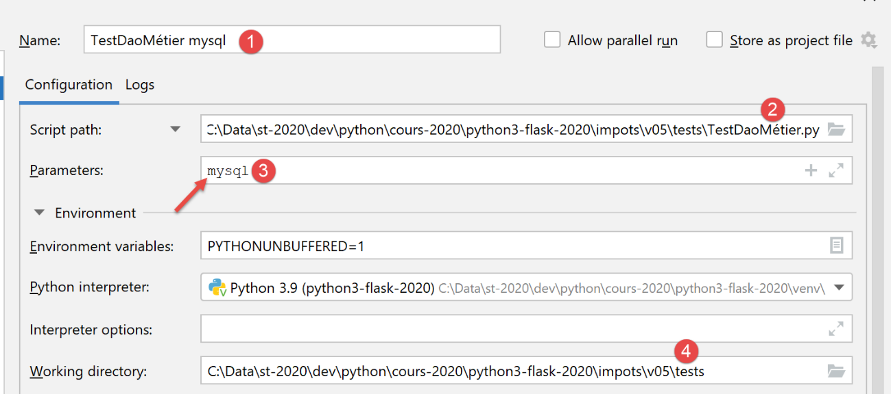
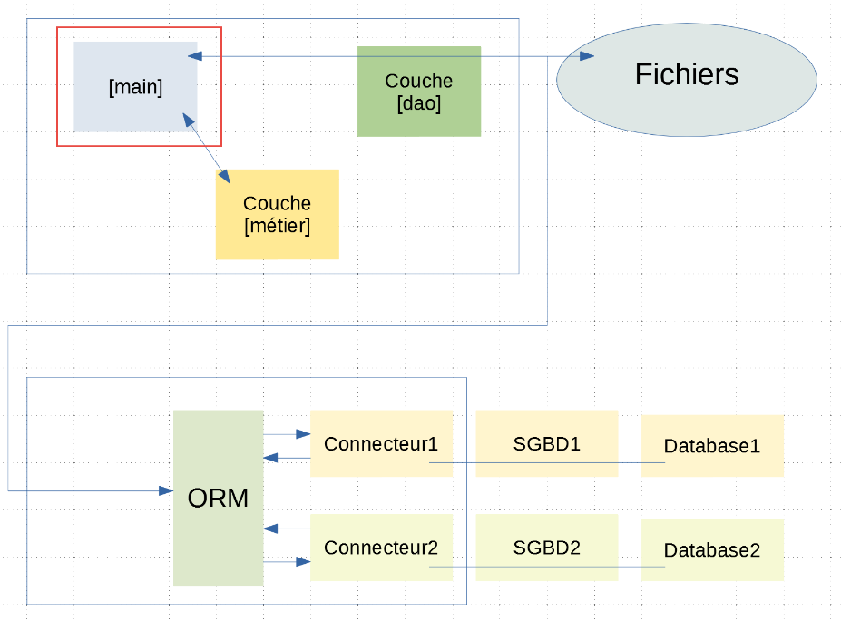
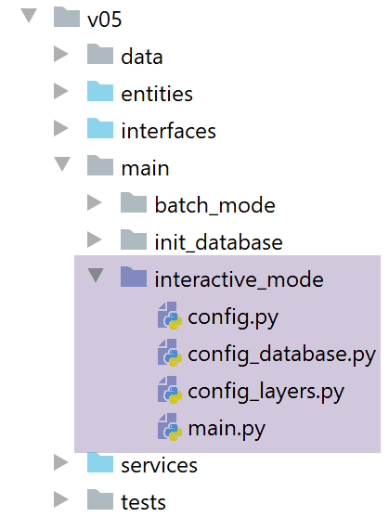

20. Application exercise: version 5

We will develop three applications:
- Application 1 will initialize the database that will replace the [admindata.json] file from version 4;
- Application 2 will calculate taxes in batch mode;
- Application 3 will calculate taxes in interactive mode;
20.1. Application 1: Database Initialization
Application 1 will have the following architecture:

This is an evolution of the Version 4 architecture (see the |Version 4| section): tax data will be stored in a database instead of a JSON file. The [DAO] layer will be updated to implement this change.
20.1.1. The [admindata.json] file

The [admindata.json] file is the same as it was in version 4:
{
"limites": [9964, 27519, 73779, 156244, 0],
"coeffr": [0, 0.14, 0.3, 0.41, 0.45],
"coeffn": [0, 1394.96, 5798, 13913.69, 20163.45],
"plafond_qf_demi_part": 1551,
"plafond_revenus_celibataire_pour_reduction": 21037,
"plafond_revenus_couple_pour_reduction": 42074,
"valeur_reduc_demi_part": 3797,
"plafond_decote_celibataire": 1196,
"plafond_decote_couple": 1970,
"plafond_impot_couple_pour_decote": 2627,
"plafond_impot_celibataire_pour_decote": 1595,
"abattement_dixpourcent_max": 12502,
"abattement_dixpourcent_min": 437
}
We will use the keys from this dictionary as columns in the database.
20.1.2. Creating the Databases
As shown in the section |creating a MySQL database|, we create a MySQL database named [dbimpots-2019] owned by the user [admimpots] with password [mdpimpots]. In [phpMyAdmin], this looks like the following:

Similarly, as shown in the section |Creating a PostgreSQL Database|, we create a PostgreSQL database named [dbimpots-2019] owned by the user [admimpots] with the password [mdpimpots]. In [pgAdmin], this looks like the following:

The databases have been created, but for now they have no tables. These will be built by the [sqlalchemy] ORM.
20.1.3. Entities mapped by [sqlalchemy]
We will create two tables to encapsulate the data from [admindata.json]:
Defined by [sqlalchemy], the [tbtranches] table will collect data from the [limites, coeffr, coeffn] arrays in the [admindata.json] dictionary:
# la table des tranches de l'impôt
tranches_table = Table("tbtranches", metadata,
Column('id', Integer, primary_key=True),
Column('limite', Float, nullable=False),
Column('coeffr', Float, nullable=False),
Column('coeffn', Float, nullable=False)
)
Defined by [sqlalchemy], the [tbconstantes] table will contain the constants from the [admindata.json] dictionary:
# la table des constantes
constantes_table = Table("tbconstantes", metadata,
Column('id', Integer, primary_key=True),
Column('plafond_qf_demi_part', Float, nullable=False),
Column('plafond_revenus_celibataire_pour_reduction', Float, nullable=False),
Column('plafond_revenus_couple_pour_reduction', Float, nullable=False),
Column('valeur_reduc_demi_part', Float, nullable=False),
Column('plafond_decote_celibataire', Float, nullable=False),
Column('plafond_decote_couple', Float, nullable=False),
Column('plafond_impot_celibataire_pour_decote', Float, nullable=False),
Column('plafond_impot_couple_pour_decote', Float, nullable=False),
Column('abattement_dixpourcent_max', Float, nullable=False),
Column('abattement_dixpourcent_min', Float, nullable=False)
)
The entities that will be mapped to these two tables are as follows:

The [Constants] entity encapsulates the constants from the [admindata.json] dictionary:
- line 5: the [Constants] class extends the [BaseEntity] class;
- line 7: via [sqlalchemy] mapping, the [Constante] class will receive the [_sa_instance_state] property. We exclude it from the entity’s [asdict] dictionary;
- lines 11–23: the entity’s properties. We have reused the names used in the [admindata.json] dictionary to make writing the code easier;
The [Tranche] entity encapsulates a row from the three arrays [limites, coeffr, coeffn] in the [admindata.json] dictionary:
- line 5: the [Tranche] class extends the [BaseEntity] class;
- line 7: the property [_sa_instance_state] added by [sqlalchemy] is excluded from the entity's [asdict] dictionary;
- lines 10–12: the class properties;
The mapping between the [Constants, Slice] entities and the [constants, slices] tables will be as follows:

- The mappings are defined on lines 24–29. We have omitted the mappings between the properties of the mapped entities and the database tables. This is possible when the names of the table columns are the same as those of the properties they are to be associated with. For this reason, we have included the names of the mapped entities’ properties in the tables. This makes the code easier to write and understand;
20.1.4. The [sqlalchemy] configuration file
We have just detailed part of the [sqlalchemy] configuration. The complete [config_database] file is as follows:
- line 1: the [configure] function receives a dictionary as a parameter, whose [dbms] key tells it which DBMS to use: MySQL (mysql) or PostgreSQL (pgres);
- lines 6–12: the database specified by the configuration is selected;
- lines 14–44: entity/table mappings. These mappings are simple because there is no relationship between the [tranches] and [constantes] tables. They are independent. Therefore, there are no foreign keys between them to manage;
- lines 46–51: create the application’s working session [session];
- lines 53–58: the relevant information is placed in the configuration dictionary, which is then returned;
20.1.5. The [dao] layer
Let’s return to the architecture of Application 1 to be built:
The [dao] layer [1] must read the [admindata.json] file [2] and transfer its contents to one of the databases [3, 4];

The [dao] layer provides the interface [1] and is implemented by the class [2].
The [InterfaceDao4TransferAdminData2Database] interface is as follows:
- lines 8–10: the interface defines only one method [transfer_admindata_in_database] with no parameters. Since this method requires parameters (which file?, which database?), this means that these parameters will be passed to the constructor of the classes implementing this interface;
The class [DaoTransferAdminDataFromJsonFile2Database] implements the interface [InterfaceDao4TransferAdminData2Database] as follows:
- line 13: the class [DaoTransferAdminDataFromJsonFile2Database] implements the interface [InterfaceDao4TransferAdminData2Database];
- lines 15–17: the class constructor takes the configuration dictionary as a parameter. The following keys will be used:
- [admindataFilename] (line 27): the name of the JSON file containing the tax administration data to be transferred to the database;
- [database] line 32: the application’s [sqlalchemy] configuration;
- lines 34–37: deletion of the [constants] and [brackets] tables if they exist;
- lines 39–40: recreate the two tables;
- line 43: retrieve the [sqlalchemy] session from the configuration;
- lines 45–51: the arrays [limits, coeffr, coeffn] from the [admindata] dictionary are added to the session. To do this, instances of the [Tranche] entity are added to the session;
- lines 52–64: an instance of the [Constantes] entity is added to the session;
- lines 66–67: the session is validated. If the session data was not yet in the database, it is inserted at this point;
- lines 68–70: error handling;
- lines 71–74: the session is closed. This is possible because the [dao] layer is used only once;
20.1.6. Application Configuration

The application is configured by three files [1]:
- [config] is the general configuration file. It configures the [main] application. It is assisted by the other two files:
- [config_database], which we have already examined and which configures the ORM [sqlalchemy];
- [config_layers], which configures the application layers;
The [config] file is as follows:
- lines 8–36: Build the application’s Python Path;
- lines 38–43: add the path to the [admindata.json] file to the configuration;
- lines 45–48: [SQLAlchemy] configuration;
- lines 50–53: instantiate the application layers;
- line 56: return the general configuration;
The [config_layers] file is as follows:
- lines 3-4: instantiation of the [dao] layer. We saw that the constructor of the [DaoTransferAdminDataFromJsonFile2Database] class expects the application’s general configuration dictionary as a parameter;
- line 4: the reference to the [dao] layer is added to the configuration;
- line 7: return the configuration;
20.1.7. The application’s [main] script


The main [main] script is as follows:
- lines 1–10: We wait for a parameter. We check that it is present and correct;
- lines 12–14: We configure the application (general, SQLAlchemy, layers) by passing the chosen DBMS type as a parameter;
- lines 19-20: we will need the [dao] layer. We retrieve it;
- line 25: we perform the transfer to the database. All the information required by the [transfer_admindata_in_database] method is available in the properties of the [dao] layer from line 20. That is where it will retrieve it;
After running the script with the MySQL database, it contains the following elements (phpMyAdmin):



Column [3] shows the values assigned by MySQL to the primary key [id]. Numbering starts at 1. The screenshot above was taken after running the script several times.


With the PostgreSQL database, the results are as follows:

- Right-click on [1], then on [2-3];
- In [4], the tax bracket data is clearly displayed;
We do the same for the constants table [tbconstantes]:


20.2. Application 2: Calculating tax in batch mode

20.2.1. Architecture
The tax calculation application in version 4 used the following architecture:

The [dao] layer implements an interface [InterfaceImpôtsDao]. We built a class implementing this interface:
- [TaxDaoWithAdminDataInJsonFile], which retrieved tax data from a JSON file. That was version 3;
We will implement the [InterfaceImpôtsDao] interface using a new class [ImpotsDaoWithTaxAdminDataInDatabase] that will retrieve tax administration data from a database. The [dao] layer, as before, will write the results to a JSON file and retrieve taxpayer data from a text file. We know that if we continue to adhere to the [InterfaceImpôtsDao] interface, the [business] layer will not need to be modified.
The new architecture will be as follows:

20.2.2. Application Configuration

The [config_database] configuration file remains the same as it was in Application 1. The [config] configuration includes new elements:
# étape 2 ------
# on complète la configuration de l'application
config.update({
# chemins absolus des fichiers de données
"admindataFilename": f"{script_dir}/../../data/input/admindata.json",
"taxpayersFilename": f"{script_dir}/../../data/input/taxpayersdata.txt",
"errorsFilename": f"{script_dir}/../../data/output/errors.txt",
"resultsFilename": f"{script_dir}/../../data/output/résultats.json"
})
- lines 6–8: the absolute paths of the text files used by application 2;
The configuration of the layers [config_layers] evolves as follows:
- lines 3-4: the [dao] layer is now implemented by the [TaxDaoWithAdminDataInDatabase] class. This class is new but implements the same [DaoInterface] interface as version 4 of the application exercise;
- lines 7-8: the [business] layer is implemented by the [ImpôtsMétier] class. This is the class used in version 4 of the application exercise;
20.2.3. The [DAO] layer
The implementation class [ImpotsDaoWithAdminDataInDatabase] for the interface [InterfaceImpôtsDao] will be as follows:
Notes
- line 11: the [ImpotsDaoWithAdminDataInDatabase] class inherits from the [AbstractImpôtsDao] class presented in version 4. We know that the latter implements the [InterfaceDao] interface presented in that same version. It is compliance with this interface that allows us to keep the [business] layer unchanged;
- line 13: the class constructor receives the application configuration dictionary as a parameter;
- line 20: the parent class [] is initialized. It partially implements the [InterfaceDao] interface:
- [get_taxpayers_data] reads the [taxpayersdata.txt] file containing taxpayer data;
- [write_taxpayers_results] writes the results to the JSON file [results.json];
- [get_admindata] is not implemented;
- line 22: the configuration passed as parameters is stored;
- line 27: implementation of the [get_admindata] method of the [InterfaceDao] interface:
- lines 28–30: the [get_admindata] method retrieves data from the tax administration into an object of type [AdminData] and stores this object in [self.__admindata]. If the [get_admindata] method is called multiple times, the database is not queried multiple times. It is queried only the first time. On subsequent calls, the [self.__admindata] object is returned;
- lines 36–37: retrieve the [sqlalchemy] session that was created during application configuration by [config_database];
- line 40: we retrieve the tax brackets in a list;
- lines 43: we retrieve the constants for tax calculation;
- line 46: we create an instance of the [AdminData] class. Recall that it derives from [BaseEntity];
- lines 48–54: we initialize the arrays [limites, coeffr, coeffn] of the [AdminData] instance;
- lines 55–56: initialize the other properties of [AdminData] with the tax calculation constants. We took care to give the same names to the properties of the [AdminData] and [Constantes] classes, which simplifies the code;
- lines 57–58: the [AdminData] instance is stored in the [dao] layer to be returned during subsequent calls to the [get_admindata] method;
- line 60: the value requested by the calling code is returned;
- lines 61–63: error handling;
- lines 64–67: the database is only queried once. We can therefore close the [sqlalchemy] session;
20.2.4. Testing the [dao] layer
In version 4 of this application, we created a test class for the [business] layer. More specifically, it tested both the [business] and [DAO] layers. We are reusing this test to verify that the [DAO] layer is functioning as expected. The [business] layer, however, remains unchanged.


The [TestDaoMétier] test is as follows:
import unittest
class TestDaoMétier(unittest.TestCase):
def test_1(self) -> None:
from TaxPayer import TaxPayer
# {'marié': 'oui', 'enfants': 2, 'salaire': 55555,
# 'impôt': 2814, 'surcôte': 0, 'décôte': 0, 'réduction': 0, 'taux': 0.14}
taxpayer = TaxPayer().fromdict({"marié": "oui", "enfants": 2, "salaire": 55555})
métier.calculate_tax(taxpayer, admindata)
# vérification
self.assertAlmostEqual(taxpayer.impôt, 2815, delta=1)
self.assertEqual(taxpayer.décôte, 0)
self.assertEqual(taxpayer.réduction, 0)
self.assertAlmostEqual(taxpayer.taux, 0.14, delta=0.01)
self.assertEqual(taxpayer.surcôte, 0)
…
def test_11(self) -> None:
from TaxPayer import TaxPayer
# {'marié': 'oui', 'enfants': 3, 'salaire': 200000,
# 'impôt': 42842, 'surcôte': 17283, 'décôte': 0, 'réduction': 0, 'taux': 0.41}
taxpayer = TaxPayer().fromdict({'marié': 'oui', 'enfants': 3, 'salaire': 200000})
métier.calculate_tax(taxpayer, admindata)
# vérifications
self.assertAlmostEqual(taxpayer.impôt, 42842, 1)
self.assertEqual(taxpayer.décôte, 0)
self.assertEqual(taxpayer.réduction, 0)
self.assertAlmostEqual(taxpayer.taux, 0.41, delta=0.01)
self.assertAlmostEqual(taxpayer.surcôte, 17283, delta=1)
if __name__ == '__main__':
# on attend un paramètre mysql ou pgres
import sys
syntaxe = f"{sys.argv[0]} mysql / pgres"
erreur = len(sys.argv) != 2
if not erreur:
sgbd = sys.argv[1].lower()
erreur = sgbd != "mysql" and sgbd != "pgres"
if erreur:
print(f"syntaxe : {syntaxe}")
sys.exit()
# on configure l'application
import config
config = config.configure({'sgbd': sgbd})
# couche métier
métier = config['métier']
try:
# admindata
admindata = config['dao'].get_admindata()
except BaseException as ex:
# affichage
print((f"L'erreur suivante s'est produite : {ex}"))
# fin
sys.exit()
# on enève le paramètre reçu par le script
sys.argv.pop()
# on exécute les méthodes de test
print("tests en cours...")
unittest.main()
- We will not revisit the 11 tests described in the section |[business] layer test version 4|;
- lines 37–66: we will run the test script as a normal application rather than as a UnitTest. Line 66 is what will trigger the UnitTest framework. In the previous tests, we used the [setUp] method to configure the execution of each test. We were repeating the same configuration 11 times since the [setUp] function is executed before each test. Here, we perform the configuration once. It consists of defining global variables [business] on line 53 and [admindata] on line 56, which will then be used by the methods of [TestDaoBusiness], for example on line 12;
- lines 39–47: the test script expects a [mysql / pgres] parameter indicating whether a MySQL or PostgreSQL database is being used;
- lines 50–51: the test is configured;
- line 53: the [business] layer is retrieved from the configuration;
- line 56: we do the same with the [dao] layer. We then retrieve the [admindata] instance, which encapsulates the data needed to calculate the tax;
- Tests showed that the [unittest.main()] method on line 66 did not ignore the [mysql / pgres] parameter passed to the script, but instead assigned it a different meaning. Line 63 ensures that this method no longer has any parameters;
We create two execution configurations:


If we run either of these two configurations, we get the following results:
C:\Data\st-2020\dev\python\cours-2020\python3-flask-2020\venv\Scripts\python.exe C:/Data/st-2020/dev/python/cours-2020/python3-flask-2020/impots/v05/tests/TestDaoMétier.py mysql
tests en cours...
...........
----------------------------------------------------------------------
Ran 11 tests in 0.001s
OK
Process finished with exit code 0
- Lines 5 and 7: all 11 tests passed;
Note that these tests only verify 11 cases of tax calculation. Their success may nevertheless be sufficient to give us confidence in the [dao] layer.
20.2.5. The main script


The main script [main] is the same as in version 4:
Notes
- lines 1-10: we retrieve the [mysql / pgres] parameter, which specifies the DBMS to use;
- lines 12–14: the application is configured;
- lines 16-17: the [ImpôtsError] class is imported. We need it on line 38;
- lines 19-21: we retrieve references to the application layers;
- line 25: we request the tax administration data from the [dao] layer. The [business] layer needs this to calculate the tax;
- line 27: we retrieve the taxpayers’ data (id, married, children, salary) into a list;
- lines 29–30: if this list is empty, an exception is thrown;
- lines 32–35: calculate the tax for the items in the [taxpayers] list;
- line 37: write the results to the JSON file [results.json];
- lines 38–40: handle any errors;
To run the script, we create two |execution configurations|:

The results obtained in the [results.json] file are those from version 4.

20.3. Application 3: Calculating Tax in Interactive Mode
We now introduce the application that allows for interactive tax calculation. This is a port of Application 2 from Version 4.


- The [main] script initiates the user dialogue using the [ui.run] method of the [ui] layer;
- The [ui] layer:
- uses the [dao] layer to retrieve the data needed to calculate the tax;
- asks the user for information regarding the taxpayer for whom the tax is to be calculated;
- uses the [business] layer to perform this calculation;
The [config_layers] file instantiates an additional layer:
The [ImpôtsConsole] class, lines 11–12, is the same as in |version 4|.
The main script [main] is as follows:
- lines 1-10: the script expects a parameter [mysql / pgres] specifying the DBMS to use;
- lines 12-14: the application is configured;
- lines 19-20: the [ui] layer is retrieved from the configuration;
- line 25: it is executed;
The results are identical to those of |version 4|. It could not be otherwise since all the interfaces from version 4 have been preserved in version 5.